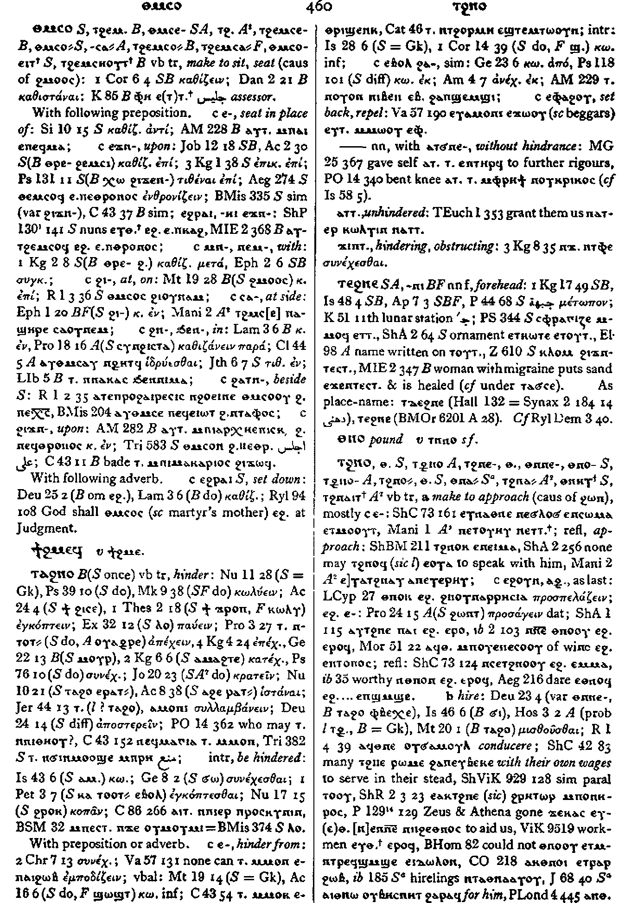

ⲧϩⲉⲙⲥⲟ
ⲧϩⲉⲙⲥⲉ-
ⲧϩⲉⲙⲥⲟ=
ⲧϩⲉⲙⲥⲏⲟⲩⲧ+
(
verb
)
Crum:
460a
tr:
make to sit, seat
(causative of ϩⲙⲟⲟⲥ)
[
καθιζειν
,
καθισταναι
]
(S) ⲑⲙⲥⲟ
(B) ⲧϩⲉⲙⲥⲟ
(S, A) ⲑⲙⲥⲉ-
(sA) ⲧϩⲙⲥⲉ-
(B) ⲧϩⲉⲙⲥⲉ-
(S) ⲑⲙⲥⲟ=, ⲑⲙⲥⲟⲟ=
(A) ⲑⲙⲥⲁ=
(B) ⲧϩⲉⲙⲥⲟ=
(F) ⲧϩⲉⲙⲥⲁ=
(S) ⲑⲙⲥⲟⲉⲓⲧ+
(B) ⲧϩⲉⲙⲥⲏⲟⲩⲧ+
With following preposition:
Crum:
460a
ⲉ- (c)
seat in place of
ⲉϫⲛ- (c)
upon
ⲉϩⲣⲁⲓ ⲉϫⲛ-, ⲉϩⲣⲏⲓ ⲉϫⲛ- (c)
ⲙⲛ-, ⲛⲉⲙ- (c)
with
ϩⲓ- (c)
at, on
ϩⲛ-, ϧⲉⲛ- (c)
in
(S) ϩⲁⲧⲛ- (c)
beside
ϩⲓϫⲛ- (c)
upon
With following adverb:
(S) ⲉϩⲣⲁⲓ (c)
set down

460
Key:
3136
Home
,
Contact